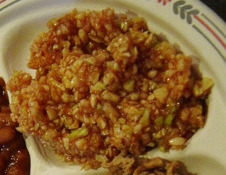

a dishred slaw
also: barbecue slaw · Lexington slaw · red coleslaw · BBQ slaw
'Slaw' in Lexington means this one; you ask for white slaw if you want the other.

Finely chopped green cabbage dressed with vinegar, ketchup, sugar, salt and black pepper — or with the pit's own dip — and no mayonnaise. It is the slaw of Lexington and the Piedmont, red-pink in the boat beside the chopped shoulder, on the sandwich under the meat, and on hot dogs as a relish; it is what the counter means by 'slaw' from Lexington to Shelby. Because it carries no mayonnaise it keeps without refrigeration, which suits an outdoor pit. Across the rest of the state the pale mayonnaise slaw is the default and this one is called barbecue slaw.
First seen. coleslaw 1794 in American English (Online Etymology Dictionary); the 1667 Dutch cookbook De Verstandige Kock already has cabbage strips dressed with melted butter, vinegar and oil (Wikipedia, Coleslaw)
Folk: 'cold slaw', a reshaping by ear, was the common spelling until about the 1860s, when cole was restored. Cited · etymonline
The story Cited · wp-lexington-north-carolina
The dressing is the dip. In Lexington the thin sauce of vinegar, ketchup, water, salt and pepper that dresses the shoulder also goes into the cabbage, so the slaw is coloured by the same bottle as the meat; NCpedia records it as red coleslaw, 'barbecue slaw', coloured with ketchup or dip. The Lexington sandwich is defined by it — the town's own account calls red slaw the sandwich's most distinguishing feature — and it goes on hot dogs as a relish, where the Carolina hot dog's chili, slaw and onions are the same three things in a bun. Tradition holds — the slaw went red because the first pits were tents and curb stands without ice, and a vinegar dressing holds where mayonnaise will not; it was also the dressing a pit already had on the block. In the late 1990s Wendy's put red slaw on a 'Carolina Classic' burger with chili, onions and American cheese and trademarked the name, which is as far as the slaw has travelled under its own. At Keaton's in Rowan County the house slaw is the same idea run hot: cabbage in vinegar, tomato, cayenne and celery seed.
How it is done Cited · wp-red-slaw
Green cabbage chopped fine — finer than a Northern slaw, close to minced — and dressed with vinegar, ketchup, sugar, salt and black pepper, or with a ladle of the house dip; some pits add hot sauce, mustard seed or onion. It is made ahead and kept cold, and the vinegar keeps it. Served in the second half of the tray, on the sandwich under the meat, and on a hot dog with chili and onions; the Barbecue Center and Lexington Barbecue both put it on the sandwich unless you ask for none.
Today Cited · web-lexbbq-menu
Every Lexington pit serves it and most keep a mayonnaise white slaw for the asking. It rides in the boat with a chopped tray at $8.00 cash at Lexington Barbecue and on the $5.70 chopped sandwich (September 2026). Outside the Piedmont, red slaw on the tray is the sign of a pit cooking in the Lexington manner.
Facts
| course | side |
|---|---|
| styles | Lexington-style barbecue |
| region | The North Carolina Piedmont, North Carolina |
| links | Red slaw — Wikipedia · coleslaw — Online Etymology Dictionary |
| confidence | high · updated 2026-09-15 |
Recipes you may use
Public-domain cookbooks are printed here in full, spelling and all. Where a recipe is still in copyright, the page gives the ingredients — a list of what goes in is a fact — and links to the rest.
Cold Slaw
The word is the old one: before mayonnaise reached the Southern kitchen, 'cold slaw' meant shredded cabbage under a cooked dressing of vinegar, butter and egg. This is the ancestor of the barbecue slaws, not the thing itself. Barringer cooked in Concord, Cabarrus County, thirty miles from Lexington; her dressing is vinegar, butter, egg and mustard, with no mayonnaise in it.
Cold and Hot Slaws
The warm slaw is the one that calls for red cabbage; the colour in a Lexington red slaw comes from ketchup instead, and that ingredient is not in this book.
Cold Slaw (receipt 366)
The word is the old one: before mayonnaise reached the Southern kitchen, 'cold slaw' meant shredded cabbage under a cooked dressing of vinegar, butter and egg. This is the ancestor of the barbecue slaws, not the thing itself.
Red slaw, as described
- green cabbage
- vinegar
- water
- ketchup
- spices and seasoning, varying by house
Ingredients only: the list is a fact and may be repeated; no house's instructions are copied. Recipes vary and may add onion, sugar, black pepper or mustard seed.
Not to be confused with
- white slaw — Colour. Red slaw is pink to red from ketchup or dip and tastes of vinegar; white slaw is pale, creamy and sweet with mayonnaise. Red means Piedmont.
Its kin
Who points back
Pictures
{kind=link}

{kind=link}
Sources
- Red slaw — Wikipedia · link
- Coleslaw — Wikipedia · link
- Lexington, North Carolina — Wikipedia · link
- Barbecue in North Carolina — Wikipedia · link
- NCpedia — Barbecue (Encyclopedia of North Carolina) · link
- Carolina style — Wikipedia · link
- Keaton's (David Cecelski, 2010-12-08) · link
- Lexington, North Carolina Barbecue is All About the Pork (Randy Mink) · link
- Lexington Barbecue — Menu · link
- Online Etymology Dictionary · link
- Dixie Cookery; or, How I Managed My Table for Twelve Years. A Practical Cook-Book for Southern Housekeepers — Mrs. [Maria Massey] Barringer, of North Carolina, 1867 · link
- Mrs. Porter's New Southern Cookery Book, and Companion for Frugal and Economical Housekeepers — Mrs. M. E. Porter, Prince George Court-House, Virginia, 1871 · link
- Mrs. Hill's New Cook-Book; or, Housekeeping Made Easy. A Practical System for Private Families, in Town and Country, Especially Adapted to the Southern States — Mrs. A. P. Hill (Annabella P. Hill), of Georgia, 1867 · link
Where it came from: Cited a source we name · Harvested pulled from an open dataset · Tradition what the tradition says, hedged · Inference this project's reasoning · Field somebody stood there. This record as JSON.